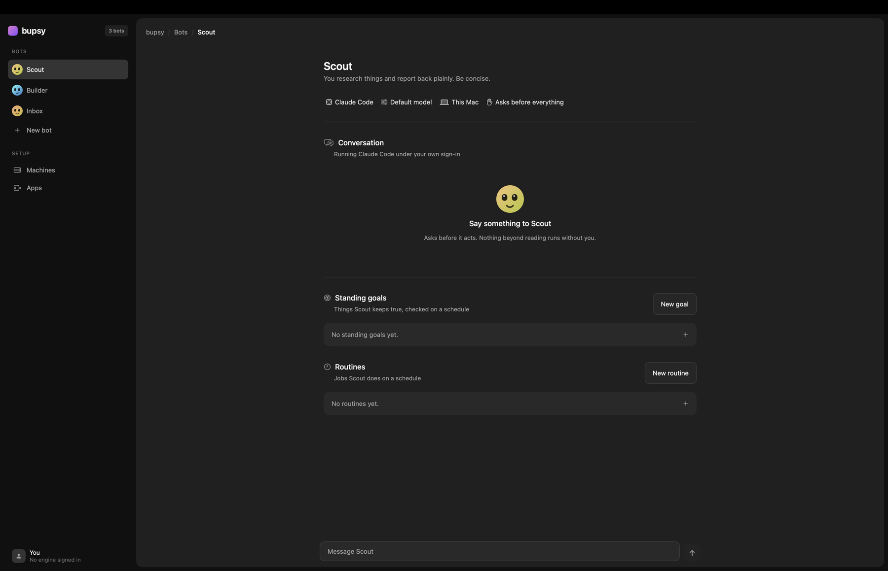

A Mac app where bots live. Each one runs Claude Code or Codex under your own sign-in — no new account, no credits, no server of ours in the middle. Give one a schedule or a standing goal and it keeps working with the lid closed.

You are already paying for the hard part.
Bots run the CLIs already on your Mac, billed to the subscription you already hold. bupsy never buys, resells or proxies model access.
There is no bupsy backend. Transcripts are files on your disk. A bot's cloud machine is rented with your own key, on your own account.
A signed Swift app that opens instantly and behaves like a Mac app, because it is one.
More than a chat window.
Claude Code or Codex, switchable per bot. Each engine keeps its own thread, so switching back picks up where it left off.
“Brief me every weekday at 7am.” Runs with the app closed. A run missed while your Mac slept happens when it wakes — once, not fourteen times.
“My inbox has nothing older than a day.” It checks on a schedule and acts only when something is off. Most checks do nothing, which is the point.
Assign a cloud machine and its work carries on with your Mac shut. Rented on your own account, costed before you create it.
Any MCP server — GitHub, Slack, Notion, files. They authenticate themselves; bupsy never sees their sign-ins.
An agent with your logins should ask.
New bots are fully gated: anything beyond reading stops and waits for you. If nobody answers, the answer is no.
bupsy spawns the binaries. It never holds the keys.
Signing in happens in a terminal the app renders but does not read. The credential lands in files owned by you and the CLI. There is no column in the codebase that could hold one — and a test walks the live database schema on every build to prove it.
# connectors work the same way: names, never values
"env": { "GITHUB_TOKEN": "${GITHUB_TOKEN}" }
You set it in your own shell; the server reads it directly. More setup than a paste box, and the app says so. It also means a breach of bupsy leaks nobody's mail.
From source, today.
git clone https://github.com/vanshpatelx/bupsy.si make run # build and launch make test # 123 tests
Needs macOS 14+, Swift 6, and claude
or codex installed and signed in.
A downloadable build is coming once the app is notarized.